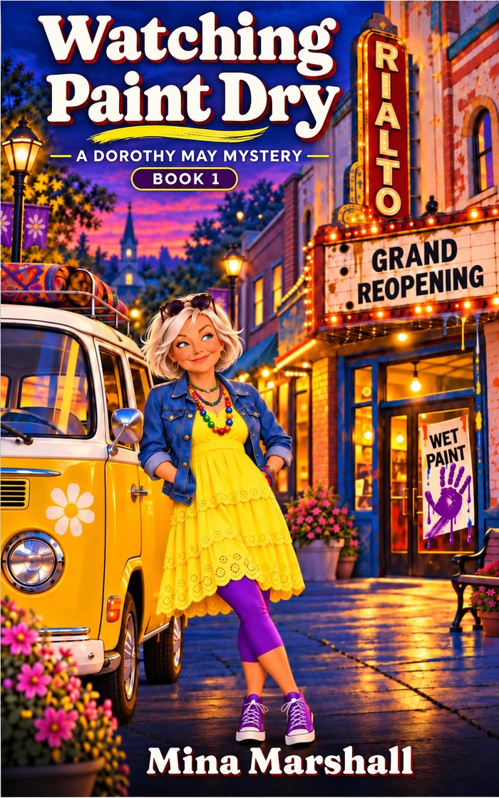
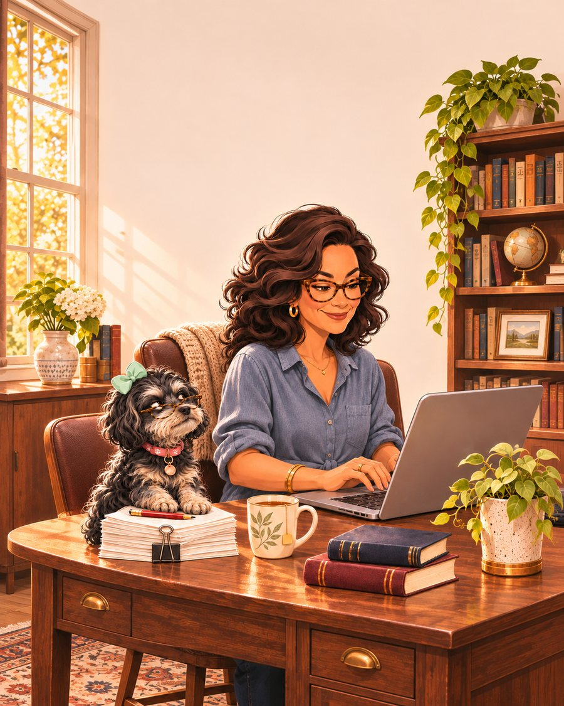

Book 1
Watching Paint Dry
A wet mural, a long night and a fall that wasn't an accident.
Preorder · Out December 1
Some women retire to the garden. Dotty Carver retired to the head of a police procession.
Port Constance, Ohio, 1999. Newly retired from the county courthouse, Dotty takes the strangest temp job in town: sitting up all night beside a wet mural at the restored Rialto Theatre. She lasts one night before the manager is found dead in the orchestra pit.
The police say he fell. Dotty heard something at 2:10 a.m. that says otherwise. Unfortunately for whoever did it, Dotty spent three decades as a court stenographer, listening to people with something to hide.
Preorder now · Out December 1, 2026 · $0.99 launch priceFree to read with Kindle Unlimited.
Funny, clean small-town cozies set in Port Constance, Ohio, in 1999. A retired court stenographer, a town full of secrets, and a long-running will-they-won't-they with a retired judge.
A wet mural, a long night and a fall that wasn't an accident.
Preorder · Out December 1Summer 1999. Dotty's new job: pulling county records for microfilming before Y2K.
Coming January 15, 2027Fall 1999. Port Constance has an old secret, and Dotty is about to find it.
Coming February 15, 2027
Mina Marshall writes funny, cozy mysteries about women who refuse to sit still, starting with the Dorothy May Mysteries, set in small-town Ohio in 1999. She runs on coffee, works in tech, and is never more than one open laptop away from plotting a murder.
She bakes, paints, crafts and sings, the singing with more feeling than technique. She lives in the American South with her husband, her kids and a very cute Yorkie-poo, Penny, who supervises every chapter and has strong opinions about each one.
Say hello: join the newsletter